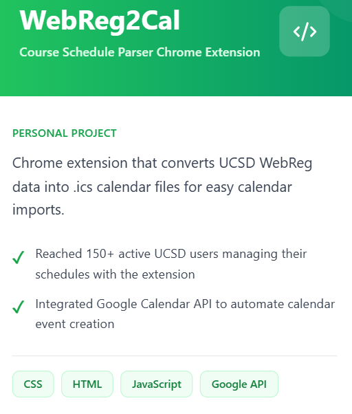
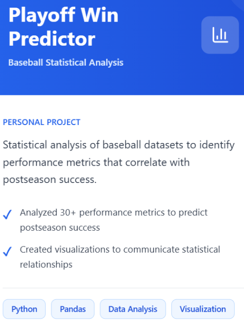
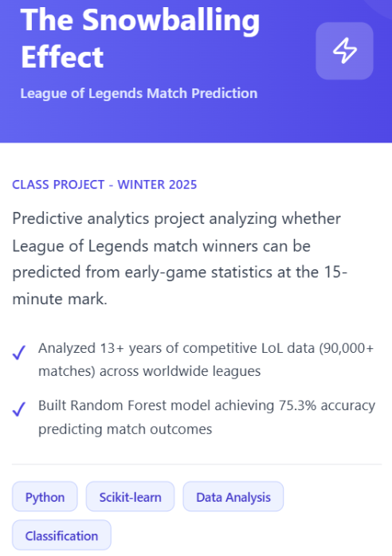

WebReg2Cal

A Chrome extension that converts UCSD WebReg schedules into a calendar-friendly format for easier planning and organization. View on GitHub

A Chrome extension that converts UCSD WebReg schedules into a calendar-friendly format for easier planning and organization. View on GitHub

A data-driven baseball analysis project that predicts playoff game outcomes using historical trends, team statistics, and analytical modeling. View on GitHub

A predictive analytics project exploring how small early-game advantages can grow over time and influence final match outcomes. View on GitHub

A placeholder card for a future interactive dashboard project focused on data storytelling and clear visual design.
A placeholder project idea for organizing campus events and presenting schedules in a simple, user-friendly layout.
A placeholder entry for future work exploring charts, visual encodings, and effective communication with data.
A placeholder concept for redesigning personal web pages with a stronger visual hierarchy and improved responsiveness.